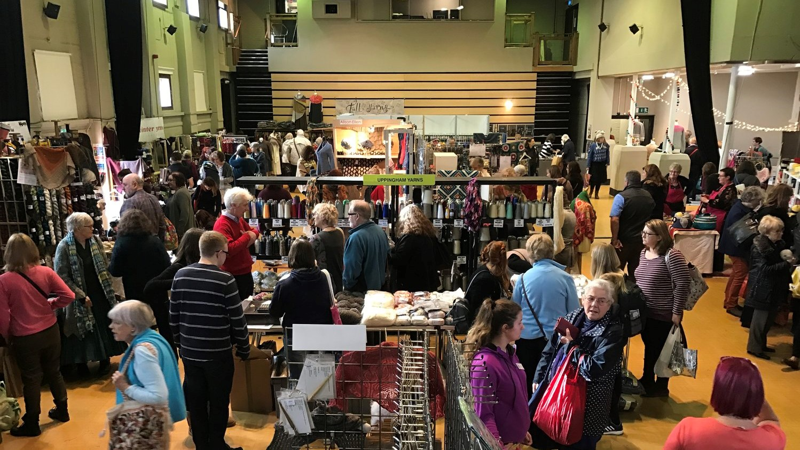
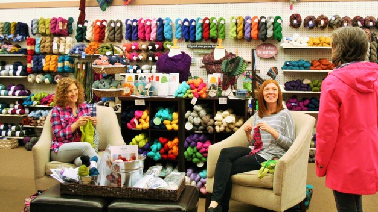

Katherine has been passionate about yarn & knitting craft and has been inspired to break from her day job to help to spread the joy by providing access to top quality yarn & tools as well as helping others to learn to knit through specialist events. Woolly Rebels in the heart of Wiltshire and you can find our exact location .